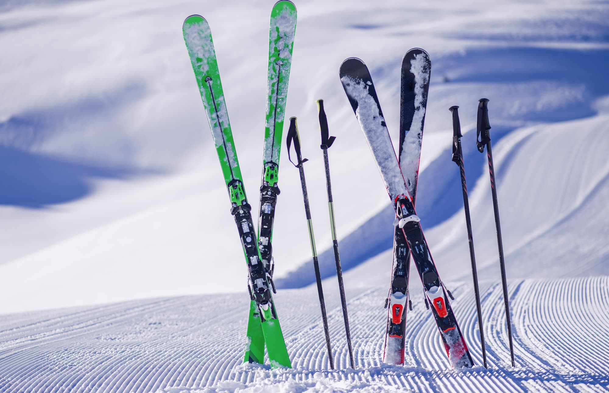
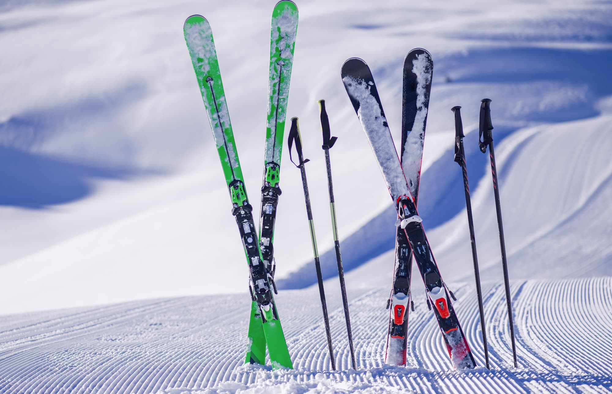
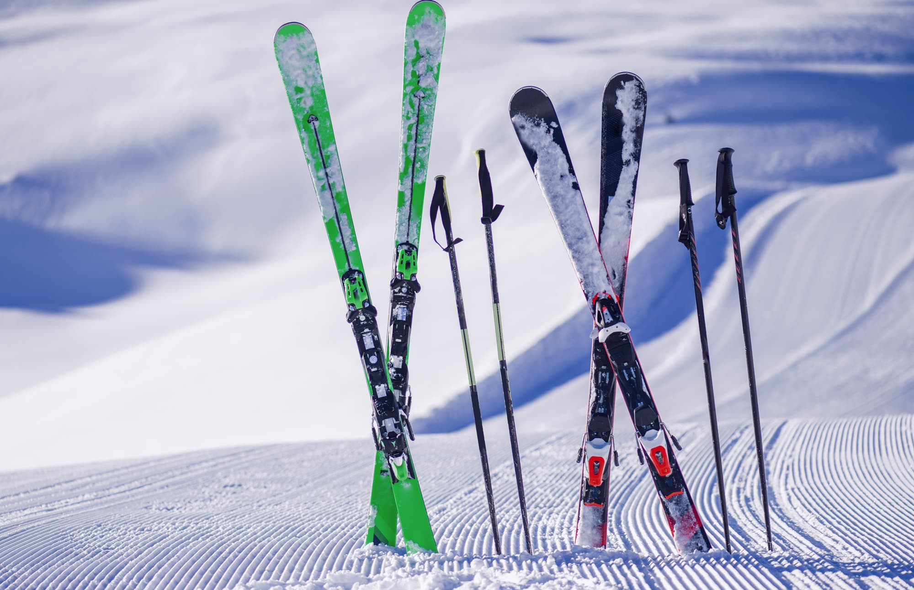

A síelés egy különleges sport, melyet mindenki szeretne legalább egyszer kipróbálni
az életben. De
vajon mit ad nekünk ez a különleges téli sport azon túl, hogy lélegzetelállító, hófödte
hegyoldalakon
száguldhatunk lefelé, miközben a jeges szél kipirult arcunkba csap? A sílécekre pattanni nem
csak
boldoggá,
de egészségesessé is tesz minket. így érdemes már kisgyermekkorban elkezdeni síelni.
A
síelés az egész testet átmozgatja, mely során erősödnek az izmok, valamint a keringési- és a
szívrendszer is
folyamatosan dolgozik. A síelés egyszerre jelent fizikai és szellemi tréninget.
Galéria

Jótékony hatások
Mint minden sport, a síelés, snowboardozás és az összes téli sport pozitív testi és
lelki hatásokkal bír.
A sportokról hosszas kutatások által kiderült mára már szinte közhelyesen, hogy végtelen jó
hatást
gyakorol az emberi szervezetre, így például erősíti az immunrendszer ellenálló képességét,
csökkenti a
stressz érzését, jó közérzetet biztosít, egészségesebb öregedést biztosít, de még az alvást
is
pihentetőbbé teszi.
Síelés egy kiváló szabadidős tevékenység, amely számos előnnyel jár. Először is, a síelés
kiváló módja a
testmozgásnak. Az aktív mozgás során szinte az összes izomcsoport részt vesz, fejlesztve
"Nem hinném, hogy bárki is belekóstolt volna az igazi életbe,
amíg nem volt síléc a lábán."
Univerzális gyógyír
Ezenkívül a síelés remek lehetőséget kínál a szabadban való tartózkodásra. A hegyek fehér hóval borított
csúcsai csodálatos látványt nyújtanak, és a friss levegőn való tartózkodás jótékony hatással van a
testre és a lélekre egyaránt. A hegyek közötti sípályákon való száguldás élménydús és izgalmas, miközben
a természet közelségében lehetünk.
A síelés nem csupán testi, hanem szellemi előnyökkel is jár. A síelés közbeni koncentráció és fókusz
növeli az éberséget, segít a stressz leküzdésében és a mentális frissesség megőrzésében. Emellett a
síelés közösségi tevékenység is lehet, hiszen barátokkal vagy családdal együtt élvezhetjük az időt a
hegyekben.


 
